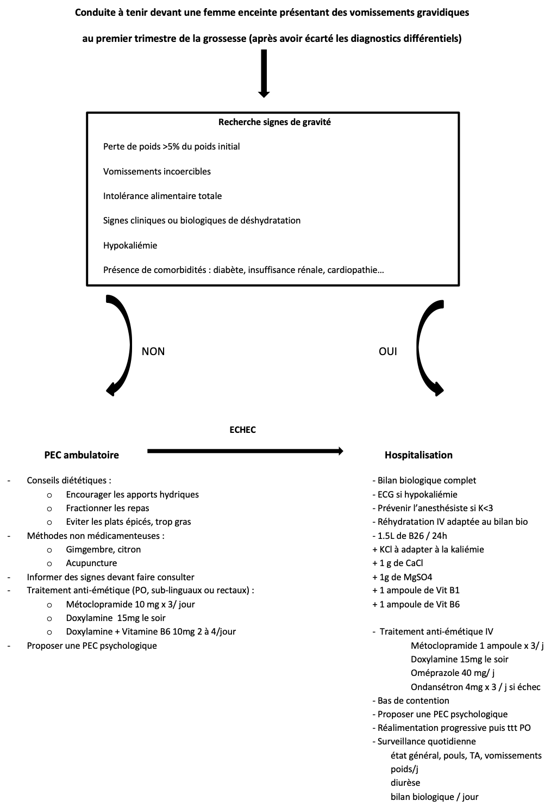

Interrogatoire et examen clinique, penser à :
Echographie obstétricale : évolutivité de la grossesse, recherche d’une grossesse multiple ou d’une grossesse molaire.
Bilan biologique :
A faire en ville en l’absence de signe clinique de gravité ou en hospitalisation au 2e étage si patiente hospitalisée. Pas de bilan biologique aux urgences.
En l’absence de signe de gravité et de comorbidité :
En cas de signe de gravité, de comorbidité (diabète, cardiopathie, insuffisance rénale…) ou d’échec du traitement à domicile.
Signes de gravité nécessitant une hospitalisation d’emblée :
Pendant l’hospitalisation :
Pose de VVP pour traitement IV dans un premier temps :
Bas de contention
Surveillance quotidienne : état général, vomissements, constantes, poids / jour, diurèse / jour, bilan biologique journalier
Reprise progressive de l’alimentation et passage des anti-émétiques par voie per-os avec l’amélioration des symptômes
Prise en charge psychologique à proposer, à poursuivre après le retour à domicile
Limiter les visites sans pour autant les interdire pour favoriser le repos des patientes
